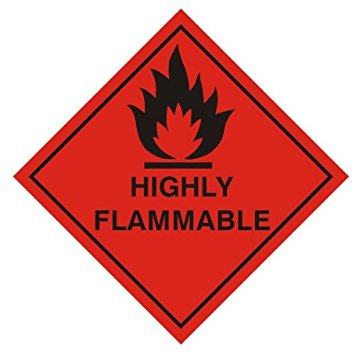
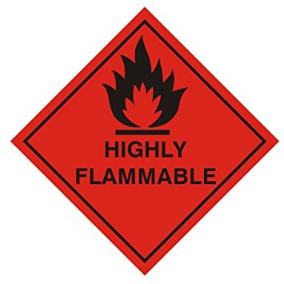

The Hazardous of Acetone
Acetone is Flammable.
 

Acetone is a clear, colorless liquid that is an extremely flammable chemical. Acetone is a common item, but it can make some serious risks. Explosion can happen when acetone is mixed with hydrogen peroxide, nitric acid and sulfur dichloride.To avoid occupational safety hazards, we must know what chemicals to segregate from acetone. To throw away the liquid acetone, you need to take the acetone to a hazardous waste treatment.
Acetone Dangerous to health

When Inhaled :
- Irritating the nose and sore throat.
- At high concentrations: Can damage the nervous system.
- Symptoms: Headache, dizziness, nausea, sleepiness, confusion.
- At heavy exposure: May arise loss of consciousness.
If exposed to the skin :
- Skin irritation
If exposed to the eye :
- Medium to severe eye irritation: red eyes, pain and tears